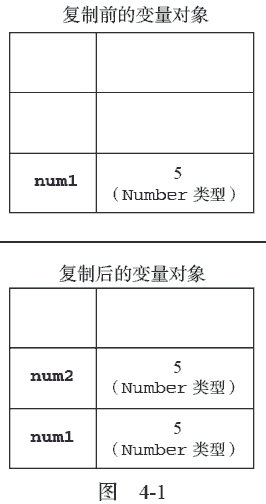

4.1 基本类型和引用类型的值
ECMAScript 变量可能包含两种不同数据类型的值：基本类型值和引用类型值。基本类型值指的是简单的数据段，而引用类型值指那些可能由多个值构成的对象。
在将一个值赋给变量时，解析器必须确定这个值是基本类型值还是引用类型值。第3 章讨论了5 种基本数据类型：Undefined、Null、Boolean、Number 和String。这5 种基本数据类型是按值访问的，因为可以操作保存在变量中的实际的值。
引用类型的值是保存在内存中的对象。与其他语言不同，JavaScript 不允许直接访问内存中的位置，也就是说不能直接操作对象的内存空间。在操作对象时，实际上是在操作对象的引用而不是实际的对象。为此，引用类型的值是按引用访问的①。
在很多语言中，字符串以对象的形式来表示，因此被认为是引用类型的。ECMAScript 放弃了这一传统。
4.1.1 动态的属性
定义基本类型值和引用类型值的方式是类似的：创建一个变量并为该变量赋值。但是，当这个值保存到变量中以后，对不同类型值可以执行的操作则大相径庭。对于引用类型的值，我们可以为其添加属性和方法，也可以改变和删除其属性和方法。请看下面的例子：① 这种说法不严密，当复制保存着对象的某个变量时，操作的是对象的引用。但在为对象添加属性时，操作的是实际的对象。
var person = new Object(); person.name = "Nicholas"; alert(person.name); //"Nicholas"运行一下
以上代码创建了一个对象并将其保存在了变量person 中。然后，我们为该对象添加了一个名为name 的属性，并将字符串值"Nicholas"赋给了这个属性。紧接着，又通过alert()函数访问了这个新属性。如果对象不被销毁或者这个属性不被删除，则这个属性将一直存在。
但是，我们不能给基本类型的值添加属性，尽管这样做不会导致任何错误。比如：
var name = "Nicholas"; name.age = 27; alert(name.age); //undefined运行一下
在这个例子中，我们为字符串name 定义了一个名为age 的属性，并为该属性赋值27。但在下一行访问这个属性时，发现该属性不见了。这说明只能给引用类型值动态地添加属性，以便将来使用。
4.1.2 复制变量值
除了保存的方式不同之外，在从一个变量向另一个变量复制基本类型值和引用类型值时，也存在不同。如果从一个变量向另一个变量复制基本类型的值，会在变量对象上创建一个新值，然后把该值复制到为新变量分配的位置上。来看一个例子：var num1 = 5; var num2 = num1;在此，num1 中保存的值是5。当使用num1 的值来初始化num2 时，num2 中也保存了值5。但num2中的5 与num1 中的5 是完全独立的，该值只是num1 中5 的一个副本。此后，这两个变量可以参与任何操作而不会相互影响。图4-1 形象地展示了复制基本类型值的过程。

当从一个变量向另一个变量复制引用类型的值时，同样也会将存储在变量对象中的值复制一份放到为新变量分配的空间中。不同的是，这个值的副本实际上是一个指针，而这个指针指向存储在堆中的一个对象。复制操作结束后，两个变量实际上将引用同一个对象。因此，改变其中一个变量，就会影响另一个变量，如下面的例子所示：
var obj1 = new Object(); var obj2 = obj1; obj1.name = "Nicholas"; alert(obj2.name); //"Nicholas"首先，变量obj1 保存了一个对象的新实例。然后，这个值被复制到了obj2 中；换句话说，obj1和obj2 都指向同一个对象。这样，当为obj1 添加name 属性后，可以通过obj2 来访问这个属性，因为这两个变量引用的都是同一个对象。图4-2 展示了保存在变量对象中的变量和保存在堆中的对象之间的这种关系。

4.1.3 传递参数
ECMAScript 中所有函数的参数都是按值传递的。也就是说，把函数外部的值复制给函数内部的参数，就和把值从一个变量复制到另一个变量一样。基本类型值的传递如同基本类型变量的复制一样，而引用类型值的传递，则如同引用类型变量的复制一样。有不少开发人员在这一点上可能会感到困惑，因为访问变量有按值和按引用两种方式，而参数只能按值传递。在向参数传递基本类型的值时，被传递的值会被复制给一个局部变量（即命名参数，或者用ECMAScript 的概念来说，就是arguments 对象中的一个元素）。在向参数传递引用类型的值时，会把这个值在内存中的地址复制给一个局部变量，因此这个局部变量的变化会反映在函数的外部。请看下面这个例子：
function addTen(num) {
num += 10;
return num;
}
var count = 20;
var result = addTen(count);
alert(count); //20，没有变化
alert(result); //30
运行一下
这里的函数addTen()有一个参数num，而参数实际上是函数的局部变量。在调用这个函数时，变量count 作为参数被传递给函数，这个变量的值是20。于是，数值20 被复制给参数num 以便在addTen()中使用。在函数内部，参数num 的值被加上了10，但这一变化不会影响函数外部的count 变量。参数num 与变量count 互不相识，它们仅仅是具有相同的值。假如num 是按引用传递的话，那么变量count的值也将变成30，从而反映函数内部的修改。当然，使用数值等基本类型值来说明按值传递参数比较简单，但如果使用对象，那问题就不怎么好理解了。再举一个例子：
function setName(obj) {
obj.name = "Nicholas";
}
var person = new Object();
setName(person);
alert(person.name); //"Nicholas"
运行一下以上代码中创建一个对象，并将其保存在了变量person 中。然后，这个变量被传递到setName()函数中之后就被复制给了obj。在这个函数内部，obj 和person 引用的是同一个对象。换句话说，即使这个变量是按值传递的，obj 也会按引用来访问同一个对象。于是，当在函数内部为obj 添加name属性后，函数外部的person 也将有所反映；因为person 指向的对象在堆内存中只有一个，而且是全局对象。有很多开发人员错误地认为：在局部作用域中修改的对象会在全局作用域中反映出来，就说明参数是按引用传递的。为了证明对象是按值传递的，我们再看一看下面这个经过修改的例子：
function setName(obj) {
obj.name = "Nicholas";
obj = new Object();
obj.name = "Greg";
}
var person = new Object();
setName(person);
alert(person.name); //"Nicholas"
这个例子与前一个例子的唯一区别，就是在setName()函数中添加了两行代码：一行代码为obj重新定义了一个对象，另一行代码为该对象定义了一个带有不同值的name 属性。在把person 传递给setName()后，其name 属性被设置为"Nicholas"。然后，又将一个新对象赋给变量obj，同时将其name属性设置为"Greg"。如果person 是按引用传递的，那么person 就会自动被修改为指向其name 属性值为"Greg"的新对象。但是，当接下来再访问person.name 时，显示的值仍然是"Nicholas"。这说明即使在函数内部修改了参数的值，但原始的引用仍然保持未变。实际上，当在函数内部重写obj 时，这个变量引用的就是一个局部对象了。而这个局部对象会在函数执行完毕后立即被销毁。
可以把ECMAScript 函数的参数想象成局部变量。
4.1.4 检测类型
要检测一个变量是不是基本数据类型？第3 章介绍的typeof 操作符是最佳的工具。说得更具体一点，typeof 操作符是确定一个变量是字符串、数值、布尔值，还是undefined 的最佳工具。如果变量的值是一个对象或null，则typeof 操作符会像下面例子中所示的那样返回"object"：var s = "Nicholas"; var b = true; var i = 22; var u; var n = null; var o = new Object(); alert(typeof s); //string alert(typeof i); //number alert(typeof b); //boolean alert(typeof u); //undefined alert(typeof n); //object alert(typeof o); //object运行一下
虽然在检测基本数据类型时typeof 是非常得力的助手，但在检测引用类型的值时，这个操作符的用处不大。通常，我们并不是想知道某个值是对象，而是想知道它是什么类型的对象。为此，ECMAScript提供了instanceof 操作符，其语法如下所示：
result = variable instanceof constructor如果变量是给定引用类型（根据它的原型链来识别；第6 章将介绍原型链）的实例，那么instanceof 操作符就会返回true。请看下面的例子：
alert(person instanceof Object); // 变量person 是Object 吗？ alert(colors instanceof Array); // 变量colors 是Array 吗？ alert(pattern instanceof RegExp); // 变量pattern 是RegExp 吗？根据规定，所有引用类型的值都是Object 的实例。因此，在检测一个引用类型值和Object 构造函数时，instanceof 操作符始终会返回true。当然，如果使用instanceof 操作符检测基本类型的值，则该操作符始终会返回false，因为基本类型不是对象。
使用typeof 操作符检测函数时，该操作符会返回"function"。在Safari 5 及之前版本和Chrome 7 及之前版本中使用typeof 检测正则表达式时，由于规范的原因，这个操作符也返回"function"。ECMA-262 规定任何在内部实现[[Call]]方法的对象都应该在应用typeof 操作符时返回"function"。由于上述浏览器中的正则表达式也实现了这个方法，因此对正则表达式应用typeof 会返回"function"。在IE 和Firefox 中，对正则表达式应用typeof 会返回"object"。